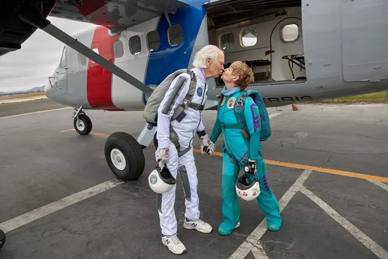

Las 7 curiosidades que descubrió la ciencia sobre los besos
Los estudiosos consideran que el acto de besar es casi tan antiguo como la propia humanidad.
FOTOGRAFÍA DE DAVE YODER
POR REDACCIÓN NATIONAL GEOGRAPHIC
PUBLICADO 12 ABR 2024, 12:01 GMT-3
Según una investigación publicada en la revista científica Science en mayo de 2023, uno de los primeros registros confirmados de un beso romántico-sexual entre humanos (es decir, aquel en el que los labios de distintos individuos se rozan) se encontró en un manuscrito de la Edad de Bronce procedente del sur de Asia, concretamente donde hoy se encuentra la India, con una fecha estimada de 1500 a.C.
Objeto de curiosidad tanto para los expertos en historia como para los del campo de las ciencias médicas, el beso tiene una efeméride dedicada: el Día Internacional del Beso, que se celebra anualmente el 13 de abril.
Para saber más sobre este acto hoy tan común entre la gente, National Geographic reunió siete datos científica e históricamente significativos sobre los besos. Continúa leyendo:
¿Cuál es el origen de los besos en la humanidad?
Según el artículo publicado en la revista Science, pruebas recientes demuestran que los besos en los labios ya estaban documentados en la antigua Mesopotamia y Egipto, a partir del 2500 a.C.
La fuente científica explica que "como este comportamiento no surgió de forma abrupta ni en una sociedad concreta", es posible que se practicara en varias culturas antiguas a lo largo de varios milenios, lo que significa que se produjo en varios periodos históricos simultáneamente.
FOTOGRAFÍA DE DAVID GUTTENFELDER
Las 7 curiosidades sobre los besos, según la ciencia
Dato 1: Los besos
románticos pueden servir para evaluar aspectos de la idoneidad de una
pareja potencial en las relaciones sexuales entre humanos, según el
artículo Examining the Possible Functions of Kissing in Romantic
Relationships (Examinando las posibles funciones de los besos en las
relaciones románticas), publicado en la Biblioteca Nacional de Medicina
(NLM, por sus siglas en inglés) de Estados Unidos.
Este "análisis" se
llevaría a cabo a través de los besos mediante el "muestreo de señales
gustativas semioquímicas que se encuentran en los aceites de la piel y
los compuestos de la saliva".
Dato 2: Los besos también tienen la útil función de evaluar el nivel de atracción hacia la pareja, especialmente en el caso de las mujeres, prosigue la investigación de la NLM. "Se encontró apoyo a la hipótesis de que un beso inicial era más probable que afectara a la atracción hacia una pareja potencial en el caso de las mujeres que en el de los hombres", afirma.
Dato 3: El beso romántico, tal y como se conoce, "es un comportamiento común en más del 90% de las culturas conocidas", detalla el artículo.
Dato 4: Oler, lamer o frotar la mejilla en la de otra persona tiene las mismas funciones que besar en sociedades en las que "el contacto boca a boca es desconocido o está mal visto", agrega el estudio. "En los antiguos murales egipcios, los besos a menudo eran representados por parejas románticas que se presionaban las caras para lamer o inhalar el aroma del otro", explica la fuente.
Dato 5: Existe una enfermedad que se transmite específicamente a través de los besos. Se trata de la mononucleosis, una infección causada por el virus de Epstein-Barr (VEB) y cuyos síntomas más comunes son fiebre, malestar general y dolor de garganta. "La mononucleosis se transmite principalmente a través del contacto oral con intercambio de saliva (de ahí su nombre popular, 'la enfermedad del beso')", explica un artículo de la Enciclopedia Britannica (la plataforma de conocimiento).
Dato 6: La sensación de placer que se experimenta durante un beso en la boca es poderosa porque es el resultado de la liberación de hormonas neurotransmisoras (como la dopamina y la serotonina, que son estimuladas por el acto de besar) y son responsables de la sensación de bienestar, según un estudio compartido en la Reunión Anual de la Asociación Americana para el Avance de la Ciencia (AAAS).
Dato 7: Volviendo al artículo encontrado en la NLM, hay pruebas que sugieren que "el ritual del beso romántico tiene varias funciones posibles en el proceso de reproducción humano", además de las ya descritas. Entre ellas, "aumentar los niveles de excitación autonómica (e iniciar el acto sexual) y mediar en los sentimientos de apego en las relaciones de pareja". Aún queda mucho por investigar sobre este tipo específico de interacción humana, que además de obedecer a procesos biológicos, también está ligada a tradiciones culturales que la llenan de significado, guiando su práctica. Mientras esto no ocurra, la gente seguirá practicando el beso sin siquiera pensar en todos los desencadenantes que pone en marcha en el organismo humano.